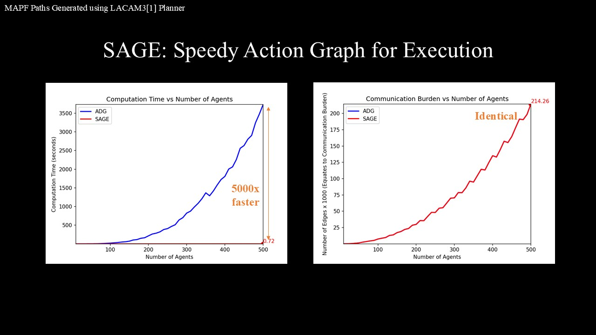
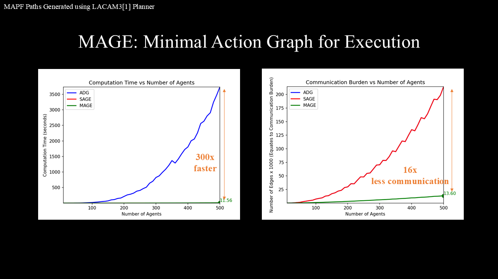
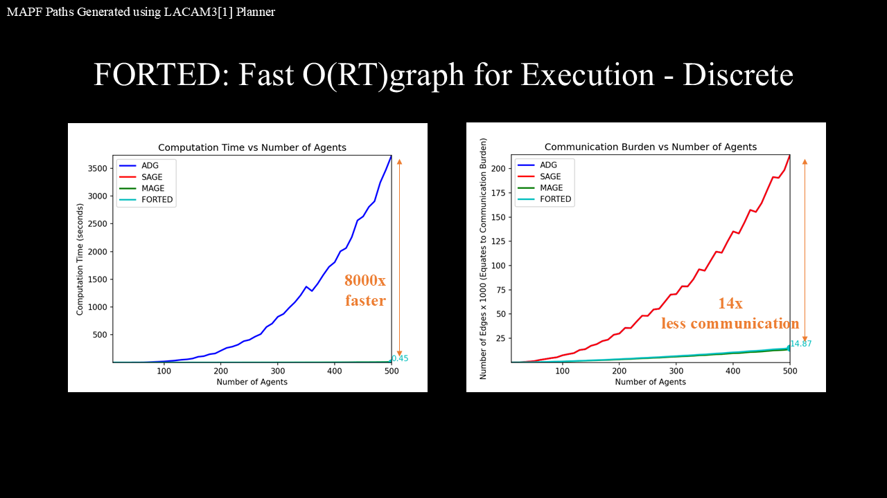

IEEE Robotics and Automation Letters · Accepted November 2025
P3GASUS: Pre-Planned Path Execution Graphs for Multi-Agent Systems at Ultra-Large Scale
(pronounced Pegasus [PEG-uh-sus], like the beyblade)
Robot Experiments
Discrete and continuous teams execute pre-planned paths with distributed dependency checks.
Abstract
Executing pre-planned paths in multi-agent systems is challenging, as a lack of synchronization can lead to collisions or live-/deadlocks, while enforcing strict synchronization may cause a widespread team delay in reaching goals. An Action Dependency Graph (ADG) solves this problem by identifying and synchronizing only the necessary robots during execution by post-processing all agents' paths into a static directed graph with actions as nodes and edges representing the execution precedence order between actions. However, ADG's creation phase currently requires an exhaustive search of the action space that inflates both computation and communication (O(R2 T2), where R is the number of robots and T is the maximum path length). This makes ADG the bottleneck for current state-of-the-art MAPF planners, which can solve for up to 10000 agents, and lifelong MAPF, which needs constant replanning during execution. Moreover, this biquadratic scaling also limits the extension of ADG to continuous space scenarios, where high-frequency updates typically effectively result in long path lengths. Addressing these limitations, in this work, we propose three improved execution graphs to cater to different needs and scenarios: SAGE, which adds edges based on the sequence in which robots visit a position; MAGE, which takes the execution graph of SAGE as input and prunes its redundant edges, reducing communication burden during execution; and FORTED which combines both approaches with a reduced complexity of O(RT), making it the overall best in discrete scenarios, trading-off scalability to continuous space scenarios. All three methods achieve speedups of 300-8000 folds over ADG, with MAGE and FORTED reducing communication overhead by more than 14 times. By integrating these methods with a framework for robust distributed path execution for both discrete and continuous scenarios, we introduce P3GASUS, an end-to-end method for pre-planned path execution in multi-agent systems.
Interactive Results
Explore the timing and communication CSVs directly from the project assets.
Benchmark Snapshots
Method-level exports for SAGE, MAGE, and FORTED.



BibTeX
@ARTICLE{11282966,
author={Duhan, Tanishq and He, Chengyang and Sartoretti, Guillaume},
journal={IEEE Robotics and Automation Letters},
title={P3GASUS: Pre-Planned Path Execution Graphs for Multi-Agent Systems at Ultra-Large Scale},
year={2026},
volume={11},
number={2},
pages={1274-1281},
keywords={Robots;Collision avoidance;Delays;Synchronization;Robot kinematics;Multi-agent systems;Time complexity;Standards;Global communication;Artificial intelligence;Distributed robot systems;path planning for multiple mobile robots;software architecture for robotics},
doi={10.1109/LRA.2025.3641121}}